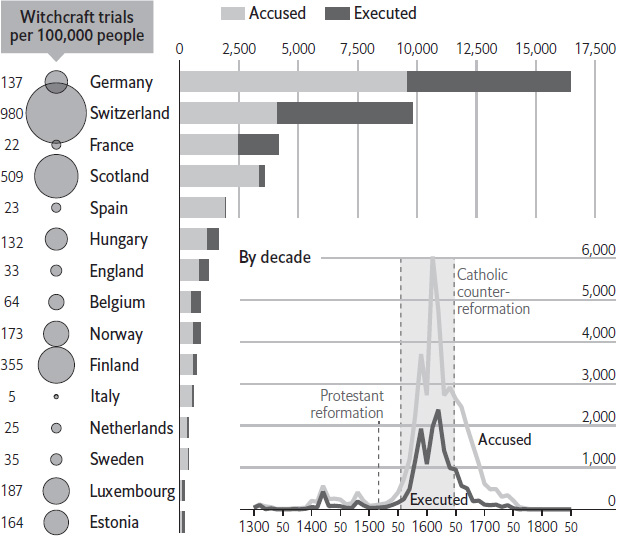

Wherever polygamy is widely practised, turmoil tends to follow. The 20 most fragile states in the world are all somewhat or very polygamous. Polygamous nations are more likely to invade their neighbours. The polygamous regions of Haiti and Indonesia are the most turbulent; in South Sudan, racked by civil war, perhaps 40% of marriages involve multiple wives. One study, by the London School of Economics, found a strong link between plural marriage and civil war. How come?
Polygamy nearly always involves rich men taking multiple wives. And if the top 10% of men marry four women each, then the bottom 30% cannot marry at all. This often leaves them not only sexually frustrated but also socially marginalised. In many traditional societies, a man is not considered an adult until he has found a wife and sired children. To get a wife, he must typically pay a “bride price” to her father. When polygamy creates a shortage of brides, it massively inflates this bride price. In South Sudan, it can be anything from 30 to 300 cattle – far more wealth than an ill-educated young man can plausibly accumulate by legal means.
In desperation, many single men resort to extreme measures to secure a mate. In South Sudan, they pick up guns and steal cattle from the tribe next door. Many people are killed in such raids; many bloody feuds spring from them. Young bachelors who cannot afford to marry also make easy recruits for rebel armies. If they fight, they can loot, and with loot, they can wed. In a paper published in 2017, Valerie Hudson of Texas A&M University and Hilary Matfess of Yale found that a high bride price is a “critical” factor “predisposing young men to become involved in organised group violence for political purposes”. Jihadist groups exploit this, too. One member of Pakistan’s Lashkar-e-Taiba, which carried out the attack on Mumbai in 2008 that killed 166 people, said he joined the organisation because it promised to pay for his siblings to get married. Radical Islamist groups in Egypt have also organised (and helped to pay for) marriages for members. In northern Nigeria, where polygamy is rife, Boko Haram still arranges cheap marriages for its recruits.
Globally, polygamy is in retreat, but in some pockets support for it is rising. After America’s Supreme Court legalised same-sex marriage in 2015, some people argued that plural unions should be next. According to Gallup, a pollster, the proportion of Americans who consider polygamy to be morally acceptable rose from 5% in 2006 to 17% last year, among the most dramatic jumps in the subjects it tracks. Campaigners in Kyrgyzstan, Turkmenistan and other central Asian states are seeking to re-establish men’s right to take multiple wives. In Kazakhstan, a bill failed in 2008 after a female MP included an amendment stipulating that polyandry (women taking multiple husbands) also be allowed. Advocates claim that polygamy promotes social harmony by giving lusty husbands a legitimate alternative to infidelity. But the mayhem in places like South Sudan, Afghanistan and northern Nigeria suggests otherwise.
Sand is in high demand. In some parts of the world, people are going to increasing lengths to get their hands on the golden grains. A “sand mafia” in India intimidates locals in order to extract and transport the material. In Morocco and the Caribbean, thieves are stripping beaches bare. Even though fully accounting for illegally mined sand is not possible, sand is easily the most mined material in the world. According to the UN Environment Programme (UNEP), sand and gravel account for up to 85% of everything mined globally each year.
Modern cities are built with, and often on, sand. Most of it is used in the construction industry to make concrete and asphalt. No surprise, then, that Asia is the biggest consumer of sand. China alone accounts for half of the world’s demand. That reflects the country’s breakneck pace of construction: according to the United States Geological Survey, China used more concrete from 2011 to 2013 (6.6 gigatons) than America did in the entire 20th century (4.5 gigatons). Sand also has industrial uses: it is used to make glass, electronics, and to help extract oil in the fracking industry. Vast quantities of sand are dumped into the sea to reclaim land. Singapore, for example, has expanded its land area by more than 20% since the 1960s in this way. The Maldives and Kiribati have used sand to shore up their islands against rising sea levels. The UN forecasts that, by 2030, there will be over 40 “megacities” home to more than 10m inhabitants (up from 31 in 2016), which means more housing and infrastructure will need to be built. And sea levels will continue to rise. All of this means that sand will only become more sought after.
So why is there a shortage, when sand seems so abundant? The trouble is that desert sand is too smooth, and cannot be used for most commercial purposes. Australian sand was transported to a faraway desert to build Dubai’s Burj Khalifa tower. Most countries also have rules in place about where, and how much, sand can be mined. But voracious demand has sparked a lucrative illegal trade in many rapidly developing countries. The result is that existing deposits are being mined more quickly than they can be naturally replenished, which is damaging the environment. Dredging causes pollution and harms local biodiversity, while thinning coastlines affect beaches’ capacity to absorb stormy weather.
Fortunately, there are substitutes for sand: asphalt and concrete can be recycled, houses can be built with straw and wood, and mud can be used for reclamation. In rich countries, government policy will encourage a shift towards such substitutes. According to Britain’s Mineral Products Association, for example, nearly a third of all housing material used in Britain in 2014 was recycled. Singapore is planning to rely on Dutch expertise for its next reclamation project, which involves a system of dykes and is less dependent on sand. In poorer countries, too, builders are likely to shift away from sand as its price rises. But unless law enforcement improves, that will be a very slow process, and the shortage of sand will persist.
Engineering brings great benefit to humanity, from bridges to computer chips. It has, though, had difficulty creating a shoelace that does not accidentally come loose. This was, in part, because no one truly understood why shoelaces come undone in the first place. But that crucial gap in human knowledge has now been plugged. Christopher Daily-Diamond, Christine Gregg and Oliver O’Reilly, a trio of engineers at the University of California, Berkeley, have worked out the mechanics of shoelace-bow disintegration. They have finally solved the mystery of how shoelaces untie themselves.
Technically, a shoelace bow is a type of slip knot that has, at its core, a reef knot. Like conventional reef knots, bows can be mistied as “granny” knots, which come undone more easily than a true reef does. But even a shoelace bow with a true reef at its core will fail eventually, and have to be retied. That is because walking involves two mechanical processes, both of which might be expected to exert forces on a shoelace bow. One is the forward and back movement of the leg. The other is the impact of the shoe itself hitting the ground. Preliminary experiments carried out by Mr Daily-Diamond, Ms Gregg and Dr O’Reilly showed that neither of these alone is enough to persuade a bow to unravel; both are needed. So they had to devise experiments which could measure and record what was going on while someone was actually walking. The “someone” in question was Ms Gregg, who endured numerous sessions on a treadmill so that the behaviour of her shoelaces could be monitored. Using cameras, and tiny accelerometers attached to the laces, the researchers realised that two things are important. One is how the act of walking deforms the reef at the centre of a bow. The other is how the different inertial forces on the straight-ended and looped extremities of the bow conspire to pull the lace though the reef in the way a wearer would when taking a shoe off.
During walking, the reef itself is loosened by the inertial forces of the lace ends pulling on it. This occurs as a walker’s foot moves first forward and then backward as it hits the ground during a stride. Immediately after that, the shock of impact distorts the reef still further. This combination of pull and distortion loosens the reef’s grip on the lace, permitting it to slip. In principle, the lace could slip either way, giving an equal chance of the bow eventually undoing completely or turning into a non-slip knot of the sort that long fingernails are needed to deal with. In practice, the former is far more common. The reason turns out to be that the free ends of the bow can swing farther than the looped ends do. The extra inertial force this causes favours slippage in the direction of the longer of the free ends. To start with, the effect is small. But as the free end in question continues to elongate, the disparity in inertial force gets bigger – and, eventually, only two or three strides are needed to take a shoe from being apparently securely tied to being untied.
Probably, nothing can be done about this differential elongation. But it might be possible to use the insights Mr Daily-Diamond, Ms Gregg and Dr O’Reilly have provided to create laces that restrict the distortion of the reef at a bow’s centre, and thus slow the whole process down. Understanding how laces untie themselves is, you might say, an important step on the way to inventing a solution.
Seen from space, the Earth is a pale blue dot. Two-thirds of its surface is covered by water. But most of that water by far – around 97% – is salty. Of the 3% that is fresh water – which is the kind humanity needs to drink, wash, make things and (most of all) produce food – about two-thirds is locked up in glaciers, ice caps and permafrost. That leaves less than 1% of the planet’s water easily accessible in rivers, lakes or aquifers. In short, the salinity of the oceans means useful water is scarce, while the less useful kind is abundant. So why is the sea salty?
The salt in the ocean mostly got there as the result of a process called weathering, which transfers mineral salts from rocks on land into the sea. Rain is not pure water, but contains small amounts of carbon dioxide absorbed from the air, which makes rainwater very slightly acidic. When this weak acid falls on land, tiny traces of minerals are dissolved from rocks into the water, and these minerals separate into charged particles called ions. These ions travel along with the water into streams, rivers and eventually into the ocean. Many of these mineral ions are subsequently removed from the sea water by marine plants and animals, but others remain in the water, and their concentration builds up over millions of years. Over 90% of the ions in sea water, accounting for about 3% of the ocean by weight, are sodium and chlorine ions, which are the chemical constituents of common salt. Other processes also play a role. Underwater volcanoes and hydrothermal vents discharge mineral salts into sea water. And isolated bodies of water with insufficient drainage may become increasingly salty through evaporation, which carries water away while leaving dissolved minerals behind. The Dead Sea (which contains about 30% mineral salts by weight) is the best-known example.
The natural processes that make the seas salty can be reversed by desalination technologies that turn sea water into fresh water. This involves either boiling and then recondensing water, or pumping it at high pressure through reverse-osmosis membranes that allow water molecules to pass, but are impermeable to larger mineral ions. Both processes are energy-intensive, however, though reverse osmosis has become far more energy-efficient in recent years. Accordingly, desalination plants are generally found in places where water is scarce but energy is cheap, such as the Middle East.
As climate change causes “global drying” – making some wet parts of the world wetter, and dry parts drier – demand for fresh water will intensify in the coming years; half the world’s population is expected to live in water-stressed areas by 2050. Better water-management policies and more water-efficient agricultural practices (such as drip irrigation) are needed. Improvements to desalination technology would help too, by allowing mankind to tap the oceans’ inconveniently salty water. “If we could ever competitively – at a cheap rate – get fresh water from salt water,” observed President John F. Kennedy in 1961, “that would be in the long-range interests of humanity, which would really dwarf any other scientific accomplishment.”
In the frozen tundra of northern Canada, miners work day and night to extract diamonds from beneath the ground at Gahcho Kué. Owned by De Beers, it is the biggest new diamond mine to open in more than a decade. It may also be the company’s last – De Beers has no plans to open another. Other companies have a few mines planned, but Bain, a consultancy, expects diamond production to peak in 2019, then begin a slow decline. Why is the world about to reach peak diamond production?
The modern diamond industry got going about 150 years ago, when a farmer’s son found a diamond near the Orange River in South Africa. A diamond rush followed, causing a surge of production that threatened to send prices plummeting; the high price of diamonds depends on their scarcity. In 1888 Cecil Rhodes founded De Beers to consolidate the area’s mines. The company would retain a stranglehold on supply for more than a century, limiting availability in order to maintain high prices. “Our only risk,” Rhodes later declared, “is the sudden discovery of new mines, which human nature will work recklessly to the detriment of us all.”
Much has changed since then. De Beers now controls only about one-third of the market. It regards any big discoveries, by itself or anyone else, to be unlikely. Explorers have sampled nearly 7,000 kimberlite pipes, the extinct volcanoes that brought most gem diamonds to the surface. Of these just 15% held diamonds and only 1% (about 60) contained enough to justify the cost of building a mine. Though exploration continues, most analysts reckon that the best deposits have now all been found.
For those who dig up diamonds, waning supply is a relief; it will help prop up prices. Brides continue to want diamond engagement rings: in America, De Beers reports, a quarter of young brides dreamed of their rings years before beginning a relationship. But there are signs that demand might falter. Those in the millennial generation earn less than their parents did at their age and are less interested in material luxury. They grew up as awareness of “blood diamonds”, which are mined to fund conflict and are illegal, entered popular culture. Brides who want a diamond now have alternatives in the form of synthetic diamonds, which have improved in quality and become less costly to produce. De Beers and other miners are working to boost demand, with new advertising campaigns and slogans. But it helps that supply is not forever.
Boko Haram has used more female suicide-bombers than any other terrorist group in history. Of the 434 bombers the group deployed between April 2011 and June 2017, 244 of them, or more than half, have been definitely identified as female. More may have been. The Tamil Tigers, the previous holders of the gruesome record, used 44 female bombers over a decade, according to a study by Jason Warner and Hilary Matfess for the Combating Terrorism Center at West Point, an American military college. Boko Haram, whose insurgency has killed more than 30,000 people in north-east Nigeria and neighbouring countries since 2011 and displaced 2.1m, is therefore the first group to use a majority of female bombers.
Nigeria’s government likes to say that Boko Haram has been “technically defeated”. The group split into two factions in 2016, after Islamic State (IS) declared a preference for a more moderate leader, Abu Musab al-Barnawi, over Abubakar Shekau. The latter’s tactics include using suicide-bombers to blow up mosques and markets, inevitably killing fellow Muslims. (Some analysts dispute the idea of factions, arguing that Boko Haram has always been made up of different cells.) But the group is far from vanquished, even though it has been forced out of towns since Muhammadu Buhari, a former military dictator, reclaimed the presidency in 2015. In July 2017 the branch affiliated to IS killed 69 members of an oil-exploration team. Indeed, the group’s suicide-bombings were especially lethal in 2017, after a relative lull in 2016. During June and July alone they killed at least 170 people, according to Reuters, a news agency. The jihadists are sending more children to their deaths too: the UN counted 83 used as human bombs in 2017, four times the total for 2016. Two-thirds of them were girls.
The suicide-bombers sent by Boko Haram are, however, less lethal than those used by other groups, say Mr Warner and Ms Matfess. This is partly because around a fifth of them detonate their explosives when confronted by soldiers, killing only themselves. Yet still the group sends attackers to Maiduguri, the city where the insurgency began, to target the university, markets and camps for the displaced. It is no coincidence that its use of female bombers rose sharply after the kidnapping of the 276 “Chibok Girls” from their school in April 2014. Boko Haram realised the propaganda value of women: the use of supposed innocents as lethal weapons has a powerful shock factor. They arouse less suspicion (at least they did when the tactic was first deployed, if no longer) and can more easily hide explosives underneath a voluminous hijab. And by sending women to blow themselves up, Boko Haram also saves its male fighters for more conventional guerrilla-style attacks.
Some of the women may be willing, if brainwashed, jihadists. Many, though, are believed to be coerced into strapping on bombs. One did so with a baby on her back. Some may see it as a way out of an abusive life as one of Boko Haram’s “wives”, plenty of whom are raped by their “husbands”. Those who give themselves up to the authorities rather than detonating their bombs often face a lifetime of stigma, as their families and communities may be unwilling to take them back. So whether the women kill anyone or not, Boko Haram sows fear and division – exactly as it intends.
Lithium is a coveted commodity. Lithium-ion batteries store energy that powers mobile phones, electric cars and electricity grids (when attached to wind turbines and photovoltaic cells). Demand is expected nearly to triple by 2025. Annual contract prices for lithium carbonate and lithium hydroxide for 2017 have doubled, according to Industrial Minerals, a journal. That is attracting investors to the “lithium triangle” that spreads into Argentina, Bolivia and Chile. This region holds 54% of the world’s “lithium resources”, an initial indication of potential supply before assessing proven reserves.
Despite having similar-sized lithium resources, there are vast differences in output between the three countries. Chile produced 76,000 tonnes in 2016, more than twice as much as Argentina. Bolivia only managed to sell a measly 25 tonnes. Such differences are emblematic of how the South American trio treat enterprise and investment more generally. Market-friendly Chile is far ahead in rankings for ease of doing business, levels of corruption, and the quality of its bureaucracy and courts. Even so, production growth has flattened, allowing Australia to threaten its position as the world’s top producer.
Below the salt
Lithium resources, tonnes, m
January 2017
Sources: US Geological Survey; Roskill Information Services; Comibol; World Bank; Transparency International
*Lithium carbonate equivalent
It has been decades since anyone thought of Argentina as business-friendly. Cristina Fernández de Kirchner, a populist president who governed until December 2015, made things harder. But under her successor, Mauricio Macri, Argentina has been hastening to make up lost ground. Bolivia has barely begun to exploit its resources. Its investment regime suffers from “lack of legal security, weak rule of law, corruption and murky international arbitration measures”, according to America’s State Department. In the battle for lithium-triangle supremacy, it has a long way to go.
In February 2017 the emirate of Abu Dhabi held the International Defence Exhibition and Conference (IDEX), the Middle East’s largest arms fair. The four-day event was a roaring success, playing host to 1,235 exhibitors and a record number of delegates. On the last day, the United Arab Emirates announced $5.2bn worth of weapons purchases from suppliers including France, Russia and America. The Gulf state’s hunger for big guns is hardly exceptional. A study by the Stockholm International Peace Research Institute (SIPRI), a think-tank, found that transfers of big weapons from 2012 to the end of 2016 reached their highest volume for any five-year period since the end of the cold war. Why is the global arms trade doing so well?
The frail security balance of an increasingly multipolar world has many countries worried. Since the end of the cold war, scholars have found that greater instability – both internal and external – has tended to be correlated with a rise in military spending, as intuition would suggest. What has changed in recent years is that a larger share of the money is going towards imports: in contrast with the 2000s, when the West’s armies undertook the bulk of the fighting in Afghanistan and Iraq, many nations sucked into this decade’s disputes lack military muscle and have no domestic industry capable of building it up. With America less eager to be the world’s policeman, they see a greater need for buying their own kit. Vietnam, which borders the South China Sea, imported three times more weaponry in the period from 2012 to the end of 2016 than in the previous five years. Saudi Arabia’s purchases grew by 212% and Qatar’s by 245%.
But the trade is also underpinned by a push on the supply side. America, which sells arms to more than 100 countries, dominates the market. As technology improves, it is helping to retool developing nations’ arsenals with modern gadgets, such as GPS guidance and automated systems. Its exports grew by 42% from 2008 to 2015. Other exporters see a lucrative market too. China, known in the 1990s for its knock-offs of Western equipment, has emerged as a top-tier supplier. South Korea sells aircraft and warships to Latin America. Russia is building on its cold-war legacy business.
The proliferation of conventional weapons is a source of volatility in itself. Yet measures to contain them have been feeble. Unlike nuclear treaties, conventional-arms-control regimes focus on making sure weapons are not sold to irresponsible users, rather than promoting disarmament. Even within this narrower scope, the efficacy of such measures remains unproven. The UN-led Arms Trade Treaty, the first global attempt at regulating the business, came into force in December 2014. China and Russia are not signatories; America has yet to ratify it. Together, these three countries account for more than 60% of exports. Existing regional control instruments, such as the EU Code of Conduct on Arms Exports, have a patchy record of blocking controversial sales. In some regions, including Asia and the Middle East, there are no such treaties. Meanwhile, America’s plans to increase military spending may prompt others to go shopping again. Expect arms trade shows – along with the arms trade – to continue to boom.
“According to such-and-such, a think-tank,” is a phrase familiar to readers of any newspaper, not least The Economist. Sharp quotes, intriguing facts and bold new policy proposals are attributed to the mysterious tanks (as is plenty of rubbish). What exactly are these outfits, which churn out reports on everything from Brexit to badgers?
The “think-tank” label became popular in the 1950s, by which time there were already plenty of such organisations in existence. Many of America’s most venerable examples, including the Brookings Institution and the Carnegie Endowment for International Peace, were founded in the early 20th century. Britain’s Royal United Services Institute, a military-analysis outfit, was created in 1831 by the Duke of Wellington. But think-tanks really blossomed in the second half of the 20th century. Researchers at the University of Pennsylvania reckon there are now nearly 7,000 of them worldwide.
In essence, think-tanks aim to fill the gap between academia and policymaking. Academics grind out authoritative studies, but at a snail’s pace. Journalists’ first drafts of history are speedy but thin. A good think-tank helps the policymaking process by publishing reports that are as rigorous as academic research and as accessible as journalism. (Bad ones have a knack of doing just the opposite.) They flourished in the 20th century for two reasons. Governments were expanding everywhere, meaning there was lots of demand for policy expertise. And the arrival of 24-hour news created an insatiable appetite for informed interviewees. The same trends are now causing think-tanks to take off in developing countries.
Yet the world may have reached peak think-tank. The University of Pennsylvania’s researchers found that in 2014 the number of new think-tanks declined for the first time in 30 years. One reason is that donors nowadays prefer to make project-specific grants, rather than funnelling money into mere thinking. Another is increased competition. Professional consultancies such as McKinsey publish a fair bit of brainwork, and members of opinionated “advocacy organisations” can make for more compelling interviewees than balanced think-tankers. So some think-tanks are rethinking themselves. The Pew Research Centre describes itself as a “fact-tank”, focusing on information rather than policy recommendations. And the Sutton Trust calls itself a “do-tank” – not just coming up with ideas, but putting its own recommendations into practice.
In May 2017 Britain joined a growing number of countries in which cigarettes can only be sold in plain packs. Tobacco companies claim that the move will boost the sales of contraband cigarettes by making them trickier to spot. Working out whether that is true or not means tracking how black-market sales change. But how can such sales be measured?
There are about a dozen ways to do it, of which three are the most commonly used, says Hana Ross of the University of Cape Town. The first is a comparison of the number of cigarettes sold legally (from records on cigarette taxes paid) with the number of cigarettes consumed (which is calculated from surveys asking people how much they smoke). The gap between the two figures gives an estimate for the size of the black market. The second commonly used method is to ask smokers where they have bought cigarettes and how much they have paid; smokers may also be asked to show the most recent pack they have bought. A price lower than that of legally sold brands suggests a contraband sale; and some smokers openly admit that they have bought contraband cigarettes, or show a tell-tale pack.
The third method is to look at discarded cigarette packs and calculate what proportion of them look like black-market purchases (they may be missing their tax stickers, for example, or display a brand that is not officially registered). Discarded packs can be collected from vendors who sell cigarettes by the stick, from litter in the streets, or by rummaging through rubbish in bins or picking them up from refuse-collection trucks. (“We dress them as if they are going into space”, says Ms Ross about the recruits who rummage through the rubbish heaps, wearing protective clothing.)
Each of these methods has its weakness. Smokers may, for example, be reluctant to mention purchases of cigarettes they know to be contraband. They may also claim to smoke less than they actually do (especially if researchers come round soon after a major anti-smoking campaign). Ideally, multiple methods should be applied in parallel to get a better estimate of total black-market sales, and how they change over time. Such studies are being conducted in a growing number of countries. Just because a sale occurs in the shadows does not mean it is impossible to cast a smouldering light on it.
“A witch! A witch! We have found a witch, may we burn her?” asks a marauding mob during a scene in Monty Python and the Holy Grail, a 1975 comedy film. “How do you know she is a witch?”, the king’s guard inquires. “She looks like one,” comes the reply. The accused witch’s defence is met with little sympathy. “They dressed me up like this. This isn’t my nose. It is a false one,” she cries in vain. That parody is remarkably close to the truth. Between the 14th and 18th centuries about 80,000 people were tried for witchcraft in Europe. They were not all old, scraggly-looking women: 15% of Scottish witches were men, and their average age was 42.
Their myriad alleged crimes were often trivial. A neighbourhood disagreement might escalate into accusations of sorcery if someone suffered a misfortune, such as a premature death in the family, after a quarrel. Around half of the accused were executed, usually by hanging or by being burnt at the stake. European witch trials fell out of fashion around 1770. In recent decades, interest in them has focused mainly on re-enactments for hobbyists and tourists. But the subject has also bewitched a small group of scholars, who have combed through the surprisingly detailed data sets available on the practice and have formulated theories to explain why, when and where such trials occurred.
In 2004 Emily Oster, an economist now at Brown University, published a paper arguing that witch trials were linked to economic shocks. Accusations of witchcraft were most prevalent during the “Little Ice Age”, a period of particularly bitter winters in Europe beginning in 1590, which caused crops to fail and incomes to fall. Ms Oster speculated that medieval village-dwellers responsible for feeding poor older women in their communities may have denounced them as witches in an effort to save scarce resources. During a 164-year-long spell beginning in 1563, some 3,500 alleged witches were tried in Scotland, the second-highest rate per person in Europe. Based on Ms Oster’s theory, that period should have been characterised by poor weather and poor harvests. But a working paper by Cornelius Christian, an economics professor at Brock University in Canada, found that the Scottish climate was actually unusually balmy during that period, leading to bumper crop yields. That led him to the opposite conclusion from Ms Oster’s: people accused of witchcraft could only be persecuted with the co-operation of elites, he reasoned, who only had enough free time to get involved in witch trials when resources were plentiful.
Other researchers take a different view. A paper by Peter Leeson and Jacob Russ of George Mason University argues that religious tensions, not the weather, put witch-hunters on the prowl. They gathered statistics from 43,000 European witch trials, primarily drawn from the mountainous areas near Lyon in France, Lucerne in Switzerland and Freiburg in modern-day Germany. Of these, three-fifths occurred during the period from 1560 to 1630, known as the “Great Hunt”, which was characterised by horrifying atrocities: in Würzburg, Bavaria, for instance, 400 people were executed on a single day. The authors attribute this hysteria to the aftermath of the Protestant Reformation. Witch trials were most common, they found, in areas where Catholic and Protestant churches enjoyed comparable levels of support and were locked in a struggle for converts. Conversely, such trials were much rarer where one creed or the other predominated. Mr Leeson and Mr Russ noted a striking similarity to modern American presidential elections, in which the two major parties focus on closely contested “swing states” while ignoring those where one has an insurmountable advantage.
Perhaps witch trials served a similar function during the Great Hunt to the role of political campaigns today: instead of competing to show voters they offer protection from terrorists and criminals, 16th-century religions competed to show potential converts they offered protection from witches. On this view, the witch-hunting equivalent of Florida (America’s biggest swing state) appears to have been Strasbourg, in France: 30% of all witch trials on the continent occurred within 300 miles (500 km) of the city. There is a deeper parallel. Witch trials led to the murder of tens of thousands of innocent victims. Modern politicians frequently court voters by warning of the perils posed by hidden enemies lurking in their midst. Voters might be well advised to consider whether the targets of the resulting policies are any guiltier than those accused of consorting with Satan just a few hundred years ago.
Double, double toil and trouble
European witchcraft, 1300–1850

Source: “Witch Trials”, by Peter Leeson and Jacob Russ, Economic Journal, August 2017